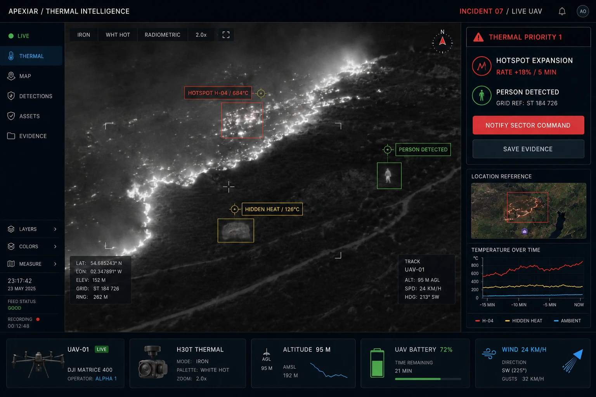

Prioritise inspection activity
Use premises intelligence, risk scoring and planning to focus protection activity where attention is needed.
Sectors / Fire & Emergency Response
Fire safety inspection, incident information and aerial evidence for the teams protecting people, premises and critical infrastructure.
Bring clearer priorities to protection activity and better context to operational decisions, with software and services shaped around your requirements.

Protection, evidence and operations
Use premises intelligence, risk scoring and planning to focus protection activity where attention is needed.
Capture incident information and support structured investigation, corrective action and learning.
Use visual and thermal aerial evidence to support reconnaissance and understanding of affected assets and surrounding land.
Prism / Fire safety intelligence
Prism is designed for Fire and Rescue Services managing complex protection activity, where premises visibility, inspection assurance and sound governance matter.
Bring live premises intelligence, structured risk scoring, mapping, planning and digital inspection management together. Identify overdue activity and data gaps, assign officers and build a clearer view of programme delivery.

AMIS / Incident management
AMIS supports incident reporting, severity classification, investigations and trend analysis. Explore how its workflows can be configured around your organisation's reporting and evidence requirements.
Mobile reporting with photos and location context helps teams record the information needed for follow-up.
Structure evidence collection, witness information, root cause analysis and corrective actions.
Review trends and recurring issues to inform preventive action and organisational learning.

Aerial Intelligence
Aerial inspection and remote reconnaissance can support understanding of affected infrastructure and the surrounding environment.
Define the aircraft, payload and information requirements around the task. Apexiar also supports aircraft and data integration for organisations operating their own systems.
The Gen 1 UAV configuration is operational; Gen 2 remains in engineering development. Mission-specific integration and response-service requirements are agreed around the operation.
Explore aerial inspection & response services →Connected Systems / Advisory & Deployment
Start with the information your teams need, the systems already in place and the workflows that must be supported.
Systems integration, platform configuration, role-based training and ongoing support help turn the selected technology into a practical operational capability.
Discuss protection planning, incident information or an aerial requirement. We will help define the scope and the next practical step.